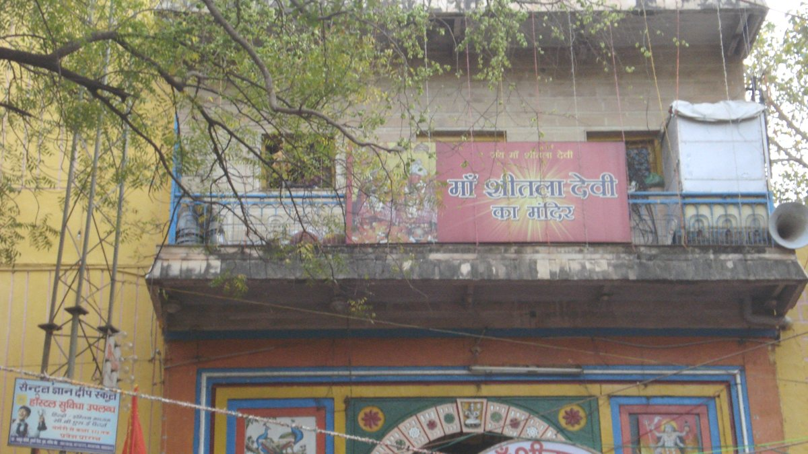

ग्वालियर मन्दिर नजिकै ट्रकले भक्तजनलाई ठक्कर दिँदा कम्तीमा १४ जनाको मृत्यु
भारी सवारीका लागि बन्द गरिएको ओरालो सडकमा धान बोकेको ट्रकले नियन्त्रण गुमाएर नवरात्रिका बेला ग्वालियरको शीतला माता मन्दिर नजिकै भक्तजनलाई ठक्कर दिएको छ। जिल्ला कलेक्टरले मृतक संख्या १४ पुगेको पुष्टि गरेकी छन्, र अस्पतालमा भेला भएका परिवारले उद्धारमा ढिलाइ भएको आरोप लगाएका छन्।

मुख्य बुँदाहरू
- आइतबार बिहान सबेरै नवरात्रि पर्वका बेला मध्य प्रदेशको ग्वालियरस्थित शीतला माता मन्दिर नजिकै ट्रकले भक्तजनलाई ठक्कर दिँदा कम्तीमा १४ जनाको मृत्यु भएको छ।
- प्रहरी वरिष्ठ अधीक्षक धर्मवीर सिंहका अनुसार दुर्घटना बिहान करिब १:३० बजे छिनोरबाट आउने सडकमा भएको हो। धेरै भक्तजन जिल्ला सदरमुकामबाट करिब १८ किलोमिटर टाढा रहेको मन्दिरतर्फ गइरहेका थिए। सडक ठाडो…
- सिंहले धान बोकेको ट्रकले प्रहरीको अवरोध तोडेर ओरालोमा नियन्त्रण गुमाएको, सडकमा रहेका भक्तजनलाई किचेको र मन्दिरको बाहिरी पर्खाल र ढोकामा ठोक्किएको बताए। रिपोर्टहरूका अनुसार ट्रकले पहुँच सडक छेउका…
आइतबार बिहान सबेरै नवरात्रि पर्वका बेला मध्य प्रदेशको ग्वालियरस्थित शीतला माता मन्दिर नजिकै ट्रकले भक्तजनलाई ठक्कर दिँदा कम्तीमा १४ जनाको मृत्यु भएको छ।
प्रहरी वरिष्ठ अधीक्षक धर्मवीर सिंहका अनुसार दुर्घटना बिहान करिब १:३० बजे छिनोरबाट आउने सडकमा भएको हो। धेरै भक्तजन जिल्ला सदरमुकामबाट करिब १८ किलोमिटर टाढा रहेको मन्दिरतर्फ गइरहेका थिए। सडक ठाडो ओरालो छ, र पर्वको भीडका बेला त्यसमा भारी सवारी चलाउन रोक लगाइएको छ।
सिंहले धान बोकेको ट्रकले प्रहरीको अवरोध तोडेर ओरालोमा नियन्त्रण गुमाएको, सडकमा रहेका भक्तजनलाई किचेको र मन्दिरको बाहिरी पर्खाल र ढोकामा ठोक्किएको बताए। रिपोर्टहरूका अनुसार ट्रकले पहुँच सडक छेउका पसल र टहराहरूलाई पनि ठक्कर दिएको थियो। घटनास्थलमा खटिएका दुई प्रहरी घाइते भए।
घाइतेको उपचार चल्दै गर्दा मृतक संख्या बढ्यो
सिंहले सुरुको वक्तव्यमा ३९ जनालाई अस्पताल लगिएको र तीमध्ये १२ जनाको मृत्यु भएको बताए। पाँचदेखि छ जना बिरामी हड्डी भाँचिएर गम्भीर घाइते छन्, र बाँकीलाई सामान्य चोट लागेको उनले बताए।
ग्वालियरकी कलेक्टर रुचिका चौहानले पछि मृतक संख्या १४ पुगेको पुष्टि गरिन्, एएनआईले जनाएको छ। सोही वृद्धिलाई १४ मृतक र २७ घाइते भनेर रिपोर्ट गरेको नेसन प्रेसले ११ मृतकको नाम दिएको छ र अधिकारीहरूले अरू तीन जनाको पहिचान गर्न अझै प्रयास गरिरहेको बताएको छ। द डेली जागरणले आइतबार बिहानको अपडेटमा अझ बढी संख्या, १८ मृतक र ३० घाइते, रिपोर्ट गरेको छ। यो समाचार प्रकाशित हुँदा एएनआईले उद्धृत गरेका अधिकारीहरूले त्यो बढी संख्या पुष्टि गरेका थिएनन्।
चौहानले दुर्घटनाको खबर आउनेबित्तिकै एम्बुलेन्स र अन्य गाडी घटनास्थलमा पठाइएको र चिकित्सकहरूले घाइतेको उपचारका लागि सिटी स्क्यान र एक्स रे गरिरहेको बताइन्।
चेकपोस्टमाथि प्रश्न
ट्रक त्यो सडकमा कसरी पुग्यो भन्ने प्रश्न अब आधिकारिक छानबिनको केन्द्रमा छ। चौहानले नवरात्रिका बेला सडकमा अवरोध र प्रहरी चेकपोस्ट रहेको बताइन्।
"गाडी कसरी भित्र पस्न सफल भयो भन्ने छानबिनको विषय हो", उनले भनिन्। "हामीले ट्रकको यान्त्रिक जाँच गर्न र के समस्या भयो तथा गाडी कसरी बायाँतिर मोडियो भनेर पत्ता लगाउन क्षेत्रीय यातायात कार्यालयको टोली पनि पठाएका छौं।"
अस्पताल र शव परीक्षण केन्द्रमा भेला भएका परिवारले प्रहरीको लापरबाही र ढिलो उद्धारको आरोप लगाएको एएनआईले जनाएको छ। केही आफन्तले प्रहरी दुर्घटनाको घण्टौं पछि घटनास्थलमा पुगेको, पीडितलाई तुरुन्त अस्पताल नलगिएको र परिवारलाई हराएका आफन्त खोज्नबाट रोकिएको बताए। ती दाबीहरू एएनआईले रिपोर्ट गरेका आरोप हुन्, र यहाँ उद्धृत रिपोर्टहरूमा अधिकारीहरूले तिनको विस्तृत जवाफ दिएका छैनन्।
राज्य सहायता घोषणा
मध्य प्रदेशका मुख्यमन्त्री मोहन यादवले राज्य सरकार प्रभावित परिवारका साथमा रहेको बताए र प्रत्येक मृतकको परिवारलाई ४ लाख रुपैयाँ, प्रत्येक गम्भीर घाइतेलाई २ लाख रुपैयाँ र अन्य प्रत्येक घाइतेलाई ५० हजार रुपैयाँ, साथै सबै घाइतेलाई निःशुल्क उपचार दिने घोषणा गरे। प्रभावित परिवार ग्वालियर, शिवपुरी र श्योपुरका हुन् भने उनले दुई मन्त्री ऐदल सिंह कंसाना र राकेश शुक्लालाई ग्वालियर पुग्न निर्देशन दिए।
दुर्घटना र चेकपोस्टबारेको छानबिन जारी छ, र अधिकारीहरूले थप विवरण आउन बाँकी रहेको बताएका छन्।
स्रोतहरू
लेटेस्टली र डेसी टकले प्रकाशित गरेका एएनआई रिपोर्टहरू, नेसन प्रेस र द डेली जागरण, तल लिंक गरिएका छन्।
समयरेखा
- Oct 18, 2026बिहान करिब १:३० बजे, छिनोर दिशाबाट आएको धान बोकेको ट्रकले ग्वालियरको शीतला माता मन्दिर नजिकैको ठाडो र प्रतिबन्धित सडकमा नियन्त्रण गुमाउँछ, अवरोध तोड्छ, भक्तजनलाई ठक्कर दिन्छ र मन्दिरको बाहिरी पर्खाल र ढोकामा ठोक्किन्छ।
- Oct 18, 2026प्रहरी वरिष्ठ अधीक्षक धर्मवीर सिंहले ३९ जनालाई अस्पताल लगिएको, तीमध्ये १२ जनाको मृत्यु भएको, पाँचदेखि छ जना गम्भीर घाइते भएको र घाइतेमध्ये दुई प्रहरी रहेको बताउँछन्।
- Oct 18, 2026कलेक्टर रुचिका चौहानले मृतक संख्या १४ पुगेको पुष्टि गर्छिन्, ट्रक चेकपोस्ट कसरी पार भयो भन्नेबारे छानबिन सुरु हुन्छ, र मुख्यमन्त्री मोहन यादवले परिवारका लागि सहायता र घाइतेलाई निःशुल्क उपचारको घोषणा गर्छन्।
स्रोतहरू
- ANI via Latestly: Gwalior truck accident, death toll rises to 14, families allege police negligence
- ANI via Desi Talk: Gwalior truck accident, death toll rises to 14
- Nation Press: Gwalior temple crash kills 14 during Navratri
- The Daily Jagran: 18 killed, 30 injured after a truck crashed into devotees near Gwalior Sheetla Mata Mandir
- ANI via Latestly: Madhya Pradesh, 12 dead as truck runs over devotees near Gwalior Sheetla Mata temple